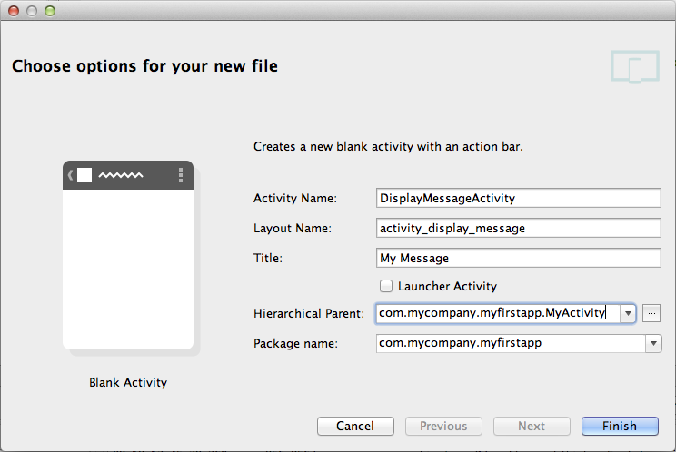
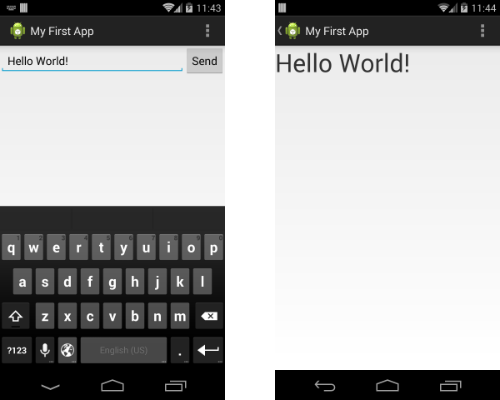

編寫:yuanfentiank789 - 原文:http://developer.android.com/training/basics/firstapp/starting-activity.html
在完成上一課(建立簡單的用戶界面)後，我們已經擁有了顯示一個activity（一個界面）的app（應用），該activity包含了一個文本字段和一個按鈕。在這節課中，我們將添加一些新的代碼到MyActivity中，當用戶點擊發送(Send)按鈕時啟動一個新的activity。
1 在Android Studio中打開res/layout目錄下的activity_my.xml 文件.
2 為 Button 標籤添加android:onclick屬性.
res/layout/activity_my.xml
<Button
android:layout_width="wrap_content"
android:layout_height="wrap_content"
android:text="@string/button_send"
android:onClick="sendMessage" />
android:onclick屬性的值"sendMessage"即為用戶點擊屏幕按鈕時觸發方法的名字。
3 打開java/com.mycompany.myfirstapp目錄下MyActivity.java 文件.
4 在MyActivity.java 中添加sendMessage() 函數：
java/com.mycompany.myfirstapp/MyActivity.java
/** Called when the user clicks the Send button */
public void sendMessage(View view) {
// Do something in response to button
}
為使系統能夠將該方法（你剛在MyActivity.java中添加的sendMessage方法）與在android:onClick屬性中提供的方法名字匹配，它們的名字必須一致，特別需要注意的是，這個方法必須滿足以下條件：
接下來，你可以在這個方法中編寫讀取文本內容，並將該內容傳到另一個Activity的代碼。
Intent是在不同組件中(比如兩個Activity)提供運行時綁定的對象。
Intent代表一個應用"想去做什麼事"，你可以用它做各種各樣的任務，不過大部分的時候他們被用來啟動另一個Activity。更詳細的內容可以參考Intents and Intent Filters。
1 在MyActivity.java的sendMessage()方法中創建一個Intent並啟動名為DisplayMessageActivity的Activity：
java/com.mycompany.myfirstapp/MyActivity.java
Intent intent = new Intent(this, DisplayMessageActivity.class);
Note：如果使用的是類似Android Studio的IDE，這裡對
DisplayMessageActivity的引用會報錯，因為這個類還不存在；暫時先忽略這個錯誤，我們很快就要去創建這個類了。
在這個Intent構造函數中有兩個參數：
Android Studio會提示導入Intent類。
2 在文件開始處導入Intent類:
java/com.mycompany.myfirstapp/MyActivity.java
import android.content.Intent;
Tip:在Android Studio中，按Alt + Enter 可以導入缺失的類(在Mac中使用option + return)
3 在sendMessage()方法裡用findViewById()方法得到EditText元素.
java/com.mycompany.myfirstapp/MyActivity.java
public void sendMessage(View view) {
Intent intent = new Intent(this, DisplayMessageActivity.class);
EditText editText = (EditText) findViewById(R.id.edit_message);
}
4 在文件開始處導入EditText類.
在Android Studio中，按Alt + Enter 可以導入缺失的類(在Mac中使用option + return)
5 把EditText的文本內容關聯到一個本地 message 變量，並使用putExtra()方法把值傳給intent.
java/com.mycompany.myfirstapp/MyActivity.java
public void sendMessage(View view) {
Intent intent = new Intent(this, DisplayMessageActivity.class);
EditText editText = (EditText) findViewById(R.id.edit_message);
String message = editText.getText().toString();
intent.putExtra(EXTRA_MESSAGE, message);
}
Intent可以攜帶稱作 extras 的鍵-值對數據類型。 putExtra()方法把鍵名作為第一個參數，把值作為第二個參數。
6 在MyActivity class,定義EXTRA_MESSAGE :
java/com.mycompany.myfirstapp/MyActivity.java
public class MyActivity extends ActionBarActivity {
public final static String EXTRA_MESSAGE = "com.mycompany.myfirstapp.MESSAGE";
...
}
為讓新啟動的activity能查詢extra數據。定義key為一個public型的常量，通常使用應用程序包名作為前綴來定義鍵是很好的做法，這樣在應用程序與其他應用程序進行交互時仍可以確保鍵是唯一的。
7 在sendMessage()函數裡，調用startActivity()完成新activity的啟動，現在完整的代碼應該是下面這個樣子：
java/com.mycompany.myfirstapp/MyActivity.java
/** Called when the user clicks the Send button */
public void sendMessage(View view) {
Intent intent = new Intent(this, DisplayMessageActivity.class);
EditText editText = (EditText) findViewById(R.id.edit_message);
String message = editText.getText().toString();
intent.putExtra(EXTRA_MESSAGE, message);
startActivity(intent);
}
運行這個方法，系統收到我們的請求後會實例化在Intent中指定的Activity，現在需要創建一個DisplayMessageActivity類使程序能夠執行起來。
Activity所有子類都必須實現onCreate()方法。創建activity的實例時系統會調用該方式，此時必須用 setContentView()來定義Activity佈局，以對Activity進行初始化。
使用Android Studio創建的activity會實現一個默認的onCreate()方法.
在Android Studio的java 目錄, 選擇包名 com.mycompany.myfirstapp,右鍵選擇 New > Activity > Blank Activity.
在Choose options窗口，配置activity：
Package name: com.mycompany.myfirstapp 點擊 Finish.

3 打開DisplayMessageActivity.java文件，此類已經實現了onCreate()方法，稍後需要更新此方法。另外還有一個onOptionsItemSelected()方法，用來處理action bar的點擊行為。暫時保留這兩個方法不變。
4 由於這個應用程序並不需要onCreateOptionsMenu()，直接刪除這個方法。
如果使用 Android Studio開發，現在已經可以點擊Send按鈕啟動這個activity了，但顯示的仍然是模板提供的默認內容"Hello world"，稍後修改顯示自定義的文本內容。
如果使用命令行工具創建activity，按如下步驟操作：
1 在工程的src/目錄下，緊挨著MyActivity.java創建一個新文件DisplayMessageActivity.java.
2 寫入如下代碼：
public class DisplayMessageActivity extends ActionBarActivity {
@Override
protected void onCreate(Bundle savedInstanceState) {
super.onCreate(savedInstanceState);
setContentView(R.layout.activity_display_message);
if (savedInstanceState == null) {
getSupportFragmentManager().beginTransaction()
.add(R.id.container, new PlaceholderFragment()).commit();
}
}
@Override
public boolean onOptionsItemSelected(MenuItem item) {
// Handle action bar item clicks here. The action bar will
// automatically handle clicks on the Home/Up button, so long
// as you specify a parent activity in AndroidManifest.xml.
int id = item.getItemId();
if (id == R.id.action_settings) {
return true;
}
return super.onOptionsItemSelected(item);
}
/**
* A placeholder fragment containing a simple view.
*/
public static class PlaceholderFragment extends Fragment {
public PlaceholderFragment() { }
@Override
public View onCreateView(LayoutInflater inflater, ViewGroup container,
Bundle savedInstanceState) {
View rootView = inflater.inflate(R.layout.fragment_display_message,
container, false);
return rootView;
}
}
}
Note:如果使用的IDE不是 Android Studio，工程中可能不會包含由
setContentView()請求的activity_display_messagelayout，但這沒關係，因為等下會修改這個方法。
3 把新Activity的標題添加到strings.xml文件:
<resources>
...
<string name="title_activity_display_message">My Message</string>
</resources>
4 在 AndroidManifest.xml的Application 標籤內為 DisplayMessageActivity添加
<application ... >
...
<activity
android:name="com.mycompany.myfirstapp.DisplayMessageActivity"
android:label="@string/title_activity_display_message"
android:parentActivityName="com.mycompany.myfirstapp.MyActivity" >
<meta-data
android:name="android.support.PARENT_ACTIVITY"
android:value="com.mycompany.myfirstapp.MyActivity" />
</activity>
</application>
android:parentActivityName屬性聲明瞭在應用程序中該Activity邏輯層面的父類Activity的名稱。 系統使用此值來實現默認導航操作，比如在Android 4.1（API level 16）或者更高版本中的Up navigation。 使用Support Library，如上所示的<meta-data>元素可以為安卓舊版本提供相同功能。
Note:我們的Android SDK應該已經包含了最新的Android Support Library，它包含在ADT插件中。但如果用的是別的IDE，則需要在 Adding Platforms and Packages 中安裝。當Android Studio中使用模板時，Support Library會自動加入我們的工程中(在Android Dependencies中你以看到相應的JAR文件)。如果不使用Android Studio，就需要手動將Support Library添加到我們的工程中，參考setting up the Support Library。
不管用戶導航到哪，每個Activity都是通過Intent被調用的。我們可以通過調用getIntent()來獲取啟動activity的Intent及其包含的數據。
1 編輯java/com.mycompany.myfirstapp目錄下的DisplayMessageActivity.java文件.
2 刪除onCreate()方法中下面一行:
setContentView(R.layout.activity_display_message);
3 得到intent 並賦值給本地變量.
Intent intent = getIntent();
4 為Intent導入包.
在Android Studio中，按Alt + Enter 可以導入缺失的類(在Mac中使用option + return).
5 調用 getStringExtra()提取從 MyActivity 傳遞過來的消息.
String message = intent.getStringExtra(MyActivity.EXTRA_MESSAGE);
1 在onCreate() 方法中, 創建一個 TextView 對象.
TextView textView = new TextView(this);
2 設置文本字體大小和內容.
textView.setTextSize(40);
textView.setText(message);
3 通過調用activity的setContentView()把TextView作為activity佈局的根視圖.
setContentView(textView);
4 為TextView 導入包.
在Android Studio中，按Alt + Enter 可以導入缺失的類(在Mac中使用option + return).
DisplayMessageActivity的完整onCreate()方法應該如下：
@Override
public void onCreate(Bundle savedInstanceState) {
super.onCreate(savedInstanceState);
// Get the message from the intent
Intent intent = getIntent();
String message = intent.getStringExtra(MyActivity.EXTRA_MESSAGE);
// Create the text view
TextView textView = new TextView(this);
textView.setTextSize(40);
textView.setText(message);
// Set the text view as the activity layout
setContentView(textView);
}
現在你可以運行app，在文本中輸入信息，點擊Send(發送)按鈕，ok，現在就可以在第二Activity上看到發送過來信息了。如圖：

到此為止，已經創建好我們的第一個Android應用了！